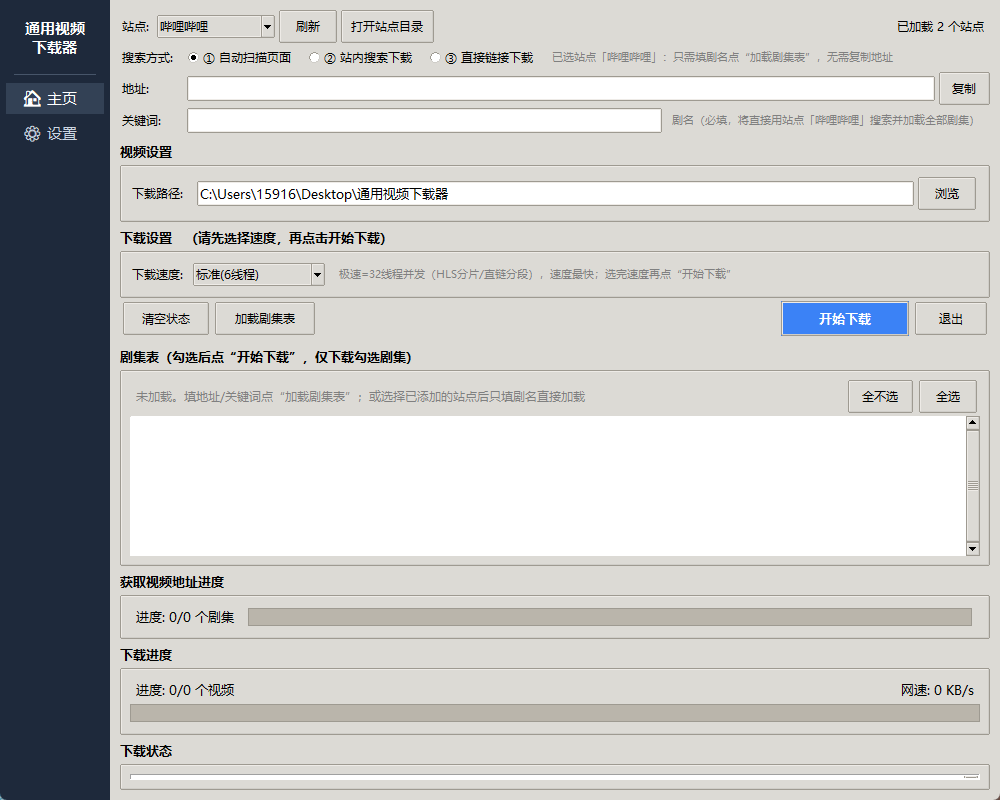

| 区块 | 位置 | 作用 |
|---|---|---|
| ① 站点区 | 左上 | 选择下载站点 / 刷新插件 / 打开插件目录 |
| ② 搜索方式 | 站点下方 | 自动扫描 / 站内搜索 / 直接链接 三选一 |
| ③ 地址 + 关键词 | 中部 | 按搜索方式填写；选了站点只需填剧名 |
| ④ 视频设置 | 中部 | 下载路径（默认程序目录，可浏览修改） |
| ⑤ 下载设置 | 中部 | 速度档位：极速32 / 高速16 / 标准6 / 平稳3 线程 |
| ⑥ 按钮行 | 中部 | 清空状态 / 加载剧集表 / 🎲随机抓取 / 开始下载 / 退出 |
| ⑦ 剧集表 | 中部 | 勾选要下载的集（全选 / 全不选） |
| ⑧ 获取视频地址进度 | 下部 | 加载剧集表时的解析进度 |
| ⑨ 下载进度 | 下部 | 总进度 / 当前集分片 / 实时网速 |
| ⑩ 下载状态 | 最下方 | 日志框（全程可见 + 自动落盘 下载日志.txt） |
| 按钮 | 作用 |
|---|---|
| 清空状态 | 清空日志与进度显示 |
| 加载剧集表 | 解析剧集列表到剧集表（可勾选） |
| 🎲 随机抓取 | 仅「抖音精选」亮起：持续随机抓取精选流，点击后变「停止」，抓取时间与数量由你控制，停止后填入剧集表 |
| 开始下载 | 下载勾选的剧集 |
| 退出 | 关闭程序 |
| 站点 | 推荐用途 | 速度档建议 | 备注 |
|---|---|---|---|
| AGE动漫 | 番剧批量下载 | 极速/高速 | 云播放器直链，多线路自动选 |
| 哔哩哔哩 | B站视频/番剧 | 标准/高速 | 自动合成音视频；大会员需 Cookie |
| 樱花动漫 | 番剧批量下载 | 极速/高速 | 直链稳定 |
| 抖音精选 | 随机刷视频 | 极速 | 人控随机抓取；风控严 |
| 自动扫描 | 任意网页 | 标准 | 通用模式，支持懒加载滚动 |
| 华丽装饰 | 备用 | 平稳(3线程) | 服务器极弱，易限流，等其恢复 |
C:\Program Files\ffmpe\bin\，重启程序。下载日志.txt（程序目录），把内容发出来即可定位。环境：Python 3.8+ / Edge 或 Chrome / ffmpeg（推荐）
安装依赖：pip install -r requirements.txt
启动：双击 一键启动.bat（推荐）；或 python gui.py
sites_data/ 放入插件文件 → 点「刷新」→ 下拉即出现。参考 template_crawler.example.py 模板。免责声明：本工具仅供学习交流使用，请仅下载您有权获取的内容，尊重版权方权益。